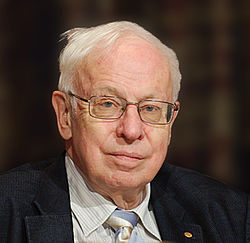

Tomas Lindahl
Tomas Robert Lindahl, född 28 januari 1938 i Stockholm, är en svensk biokemist, som fick Nobelpriset i kemi 2015.
Tomas Lindahl är son till kamrer Robert Lindahl och Ethel Hultberg, samt brorson till nationalekonomen Erik Lindahl, advokaten Helge Lindahl och läkaren Gunnar Lindahl. Farfar Carl Johannes Lindahl var fängelsedirektör i Jönköping och kom från en till flottan i Karlskrona knuten familj. Farmor Carolina (Calina) tillhörde släkten Arfwedson. Farmors farfar Johan August Arfwedson var kemist och upptäckte grundämnet litium.
Han disputerade 1967 vid Karolinska Institutet och är chef för Imperial Cancer Research Fund i England. Han var 1978–82 professor i medicinsk och fysiologisk kemi vid Göteborgs universitet.
Tomas Lindahl är sedan 1989 ledamot av Kungliga Vetenskapsakademien och utnämndes 1991 till hedersdoktor vid Göteborgs universitet.
År 2015 tilldelades han Nobelpriset i kemi tillsammans med Paul Modrich och Aziz Sancar för "mekanistiska studier av DNA-reparation".
Tomas Lindahl var 1967–80 gift med Alice Adams (född 1939), med vilken han fick en dotter och en son (födda 1974 respektive 1977).